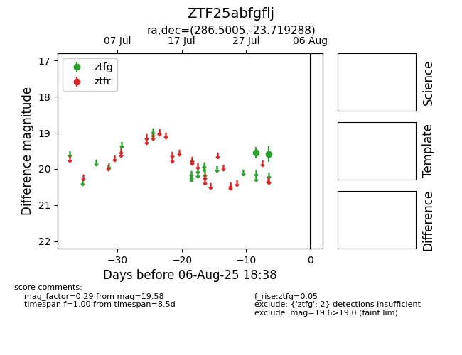

Target ZTF25abfgflj at 2025-08-06 19:20, see:
FINK: fink-portal.org/ZTF25abfgflj
Lasair: lasair-ztf.lsst.ac.uk/objects/ZTF25abfgflj
ALeRCE: alerce.online/object/ZTF25abfgflj
alt names
ZTF25abfgflj (ztf,fink)
coordinates:
equatorial (ra, dec) = (286.5005,-23.71929)
galactic (l, b) = (12.9907,-13.60146)
photometry
last ztfg=19.58
2 ztfg detections
